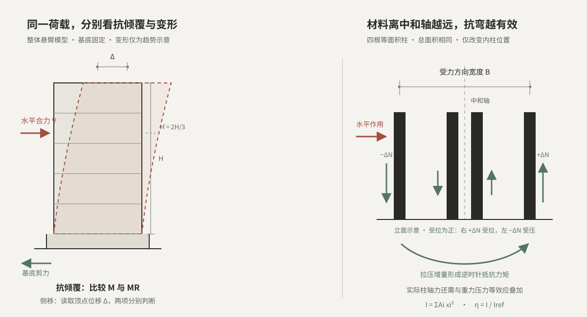

强度与变形是两项独立要求
构件或体系即使尚未达到破坏状态，过大的压缩、侧移或振动仍可能影响使用。因此不能仅用承载力验算代替刚度判断。
CAPACITY · STIFFNESS LAB
“没有破坏”并不等于“可以正常使用”。承载力保证整体能够抵抗荷载，刚度则限制荷载引起的变形。方案阶段要把这两道门槛分开判断，再检查材料是否布置在真正有效的位置。
核心概念 / 01
把建筑简化为支承在弹性体系上的整体，可以直观看到：竖向荷载引起轴向压缩，水平作用引起弯曲与侧移，动力作用还会放大整体运动。

构件或体系即使尚未达到破坏状态，过大的压缩、侧移或振动仍可能影响使用。因此不能仅用承载力验算代替刚度判断。
弹性模量 E 反映材料特性；面积 A 与惯性矩 I 反映材料数量和几何分布。提高材料等级与调整体形，是两条不同路径。
整体弯曲时，一侧伸长、另一侧缩短。外柱或外墙既能提供较大的轴力增量，也拥有更长的抗弯力臂，贡献通常远大于中部材料。
同样多的材料集中在中和轴附近，整体抗弯贡献有限。先调整支承宽度和柱墙位置，再比较材料用量，往往比简单加大截面更有效。
交互实验 / 02
红色表示水平作用与需求，绿色表示抗力。实验采用线弹性、等效悬臂的整体简化模型，位移为概念估算；M/MR 仅是整体承载能力中的抗倾覆力矩比较，不是完整承载力验算。
Ieq 是什么？把真实的柱、墙、支撑及其连接共同组成的抗侧力体系，等效为一根沿高度均匀弯曲的悬臂梁后，用来代表整体抗弯变形能力的参数。它不是单根构件的截面惯性矩，也不是建筑固定不变的固有属性；会随所采用的等效模型、受力方向、连接与开裂状态等改变。本页的 12,000 m⁴ 是可调教学输入值，并非由建筑尺寸自动计算；在同一倒三角形荷载模型下，也可由顶点位移反算 Ieq = 11VH³/(60EΔ)。侧向位移直接反映的是整体 EIeq 乘积，仅凭一个位移不能把 E 与 Ieq 唯一拆分；页面保留二者独立调整，是为了分别观察参数影响，实际分解还需已知材料模量、几何布置或其他独立试验条件。若 Δ 来自包含剪切变形等因素的总位移，反算所得应称为“有效整体刚度参数”，不能解释为只代表纯弯曲截面性质。
MR 是独立教学输入：不由建筑重力或支承宽度自动计算。实际抗倾覆能力还取决于重力、抗拔、锚固和基础条件；本页只比较 M 与所输入的 MR。
水平作用采用基底为零、顶部最大的倒三角形分布，其合力位于 H̄ = 2H/3。倾覆力矩需求 M 与 MR 比较；顶点位移 Δ 只与教学参考值 H/550 对照，不作为实际工程验收结论。
M = 2VH3
Δ = 11VH360EIeq
k = V / Δ = 60EIeq11H3
关系来源：M 由倒三角形分布荷载的合力位置 2H/3 与静力矩求得；Δ 和 k 来自欧拉—伯努利悬臂梁的弯曲变形关系。假定线弹性、等效 EIeq 沿高度不变、基底固定，忽略剪切变形和二阶效应。刚度 k = V/Δ 表示产生单位顶点位移所需的水平合力；其倒数 Δ/V 才是柔度。
上页四柱图为带柱高的立面受力示意，并非严格的支承平面图。绿色箭头表示整体弯曲引起的柱轴力增量方向，不是柱总轴力，也不是地基支承总反力；按受拉为正，右侧 +ΔN 为受拉增量，左侧 −ΔN 为受压增量。
四根柱面积相同，外柱固定在 ±B/2。这里选用“同面积全外置参照”：把相同柱总面积全部集中到 ±B/2 两侧，得到参照值 Iref。它只用于统一比较本模型的几何贡献，不代表实际工程的最佳方案。
I = 4∑i = 1 Aixi2
Iref = AB2 / 4
η = I / Iref = 0.5 + 2r2
关系来源：I 由各柱轴向刚度对整体弯曲的贡献求得，对应组合截面中忽略柱自身局部惯性矩后的面积二次矩；η 是本页定义的相对布置效率。四柱等面积，外柱位于 ±B/2，内柱位于 ±rB，经代数整理得到 0.5 + 2r²。
模型说明：H/550 仅作为位移数值的教学参照，不对应特定结构类型的规范限值；整体顶点位移也不等于层间位移角。效率实验只比较材料位置对整体抗弯刚度的贡献，不代表完整柱网设计。
学习完成：承载力控制破坏风险，刚度控制变形；材料的位置决定其整体抗弯效率。